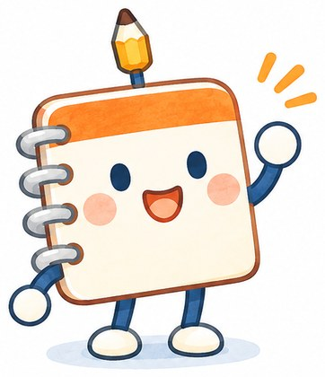
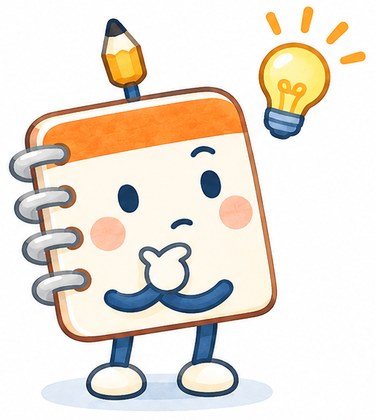
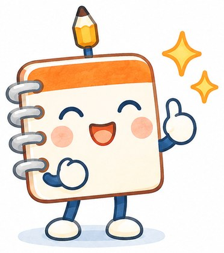

不懂技術也看得懂。四個階段，每一課都有文字版和 3 分鐘影片版。先學會用，再學會用得好，最後讓它幫你的生意省錢、賺錢。


學完第 3 階，想自己做一個 App？這本書跟著一個記帳 App，從第一次跟 AI 對話，一路做到上架、收費、行銷。
AI 圈變化很快，所以每一課都附上來源，定期重新查核，頁面上寫明最後查核的日期。
AI 協助找官方文件、研究和可信的報導
AI 協助整理成課文和影片腳本
每個說法對照來源，講錯的改掉
沒用過 AI 的人也要一聽就懂
有變化就更新，並寫上查核日期

在方格子的帳號裡隨時可以自己取消。取消後下一期不會再扣款，已經付費的這一期可以看到期滿。
會員是在方格子沙龍訂閱，退款照方格子的沙龍條款辦理。訂閱前請先看免費的第 1 階，確定看得懂、適合你再訂。
第 1 階就是寫給完全沒用過 AI 的人，而且免費。先看「AI 到底是什麼？」，看得懂再往上爬。
每一課都會定期重新查核，頁面上會寫最後查核的日期。會員期間的更新都不用另外付費。